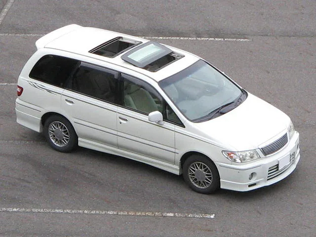
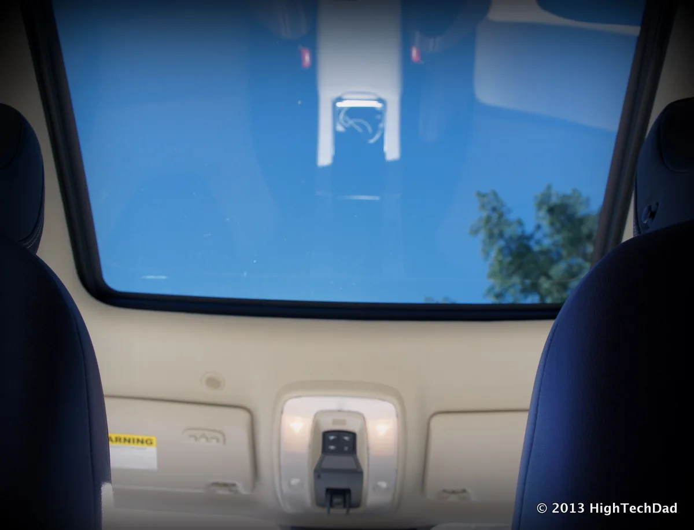

▲ 선루프 표면의 물방울. 이 물이 제대로 빠지지 않으면 실내 누수로 이어진다 ⓒ Wikimedia Commons (CC BY-SA 4.0)
선루프가 달린 차에서 천장 안쪽으로 물이 새면, 대부분의 운전자는 선루프 자체가 고장 났다고 생각한다. 하지만 실제로는 선루프 유리 자체보다 눈에 잘 안 띄는 배수 구조에 문제가 있는 경우가 더 많다.
1. 선루프는 원래 물이 샌다 — 설계상 그렇다

▲ 선루프가 열린 차량 지붕. 선루프 프레임 주변으로 빗물이 흘러드는 것은 설계상 자연스러운 현상이다 ⓒ Wikimedia Commons (CC BY-SA 3.0)
다소 의외지만, 선루프 프레임 틈으로 빗물이 스며드는 것 자체는 정상적인 설계다. 선루프는 완벽하게 밀폐된 구조가 아니라, 프레임 주변에 홈을 파서 빗물을 모은 뒤 배수구(드레인 호스)를 통해 차체 하단(주로 필러 내부를 거쳐 바퀴 근처)으로 흘려보내도록 만들어져 있다. 문제는 이 배수 경로가 막혔을 때 발생한다.
2. 누수의 3대 원인

▲ 실내에서 바라본 파노라마 선루프. 프레임 가장자리를 따라 배수 홈이 지나간다 ⓒ Wikimedia Commons (CC BY 2.0)
선루프 누수는 크게 세 가지 원인으로 나뉜다. 첫째는 고무 씰의 노후화로, 시간이 지나며 탄성을 잃은 씰 사이로 빗물이 직접 침투하는 경우다. 둘째는 오늘 다룰 배수구 막힘이며, 셋째는 사고 수리 이력 등으로 유리 패널 자체의 정렬이 틀어진 경우다. 이 중 배수구 막힘이 가장 흔하면서도 운전자가 스스로 예방·해결할 수 있는 원인이다.
3. 왜 막히나 — 낙엽과 먼지의 축적
▲ 가로수 밑에 주차된 차량 지붕에 낙엽이 쌓인 모습. 이런 낙엽이 선루프 배수구로 흘러들어가면 막힘의 주된 원인이 된다 ⓒ Wikimedia Commons (CC BY 2.0)
배수구는 선루프 프레임 네 모서리 부근에 위치한 작은 구멍으로, 여기에 낙엽 조각이나 먼지, 심하면 벌레 사체 등이 쌓이면 물이 빠져나갈 길이 좁아지거나 완전히 막힌다. 배수구가 막힌 상태에서 비가 내리면, 원래대로라면 밖으로 빠져야 할 물이 차체 안쪽으로 역류하듯 스며들어 천장 내장재를 적시게 된다. 가을철 낙엽이 많이 떨어지는 시기나, 세차장 브러시에 낙엽 조각이 밀려 들어간 직후 특히 주의가 필요하다.
4. 직접 해결하는 법
▲ 선루프 패널이 열린 지붕 외부. 배수구는 이 프레임 모서리 부근에 위치한다 ⓒ Wikimedia Commons (CC BY-SA 3.0)
배수구 관리법
- 정기적으로 배수구 덮개를 열어 이물질을 육안으로 확인한다.
- 막힌 부분은 가는 와이어를 넣어 조심스럽게 뚫는다.
- 또는 압축공기(에어건)로 배수구 안쪽을 청소한다.
- 무리하게 힘을 주면 호스가 찢어질 수 있으니 부드럽게 작업한다.
이 작업이 익숙하지 않다면 정비소에 문의해 배수구 세척만 별도로 요청할 수 있다. 비교적 간단한 작업이라 비용 부담도 크지 않은 편이다.
5. 정리
체크포인트
- 선루프 프레임으로 빗물이 스며드는 것 자체는 정상적인 설계다.
- 실내 누수의 상당수는 선루프 고장이 아니라 배수구 막힘 때문이다.
- 낙엽·먼지가 쌓이는 가을철에는 특히 배수구를 확인하자.
- 막혔다면 와이어나 압축공기로 비교적 간단히 해결할 수 있다.